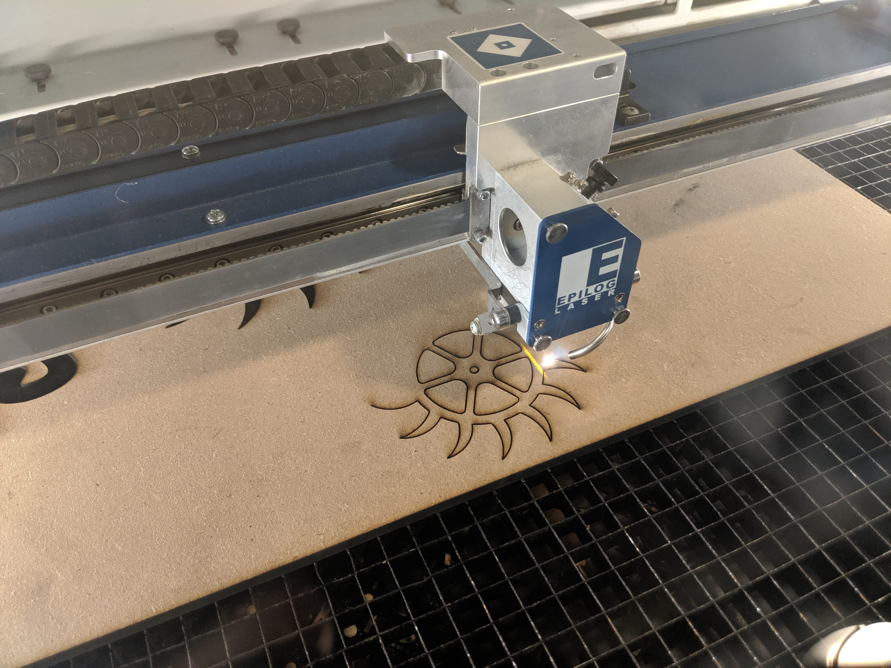
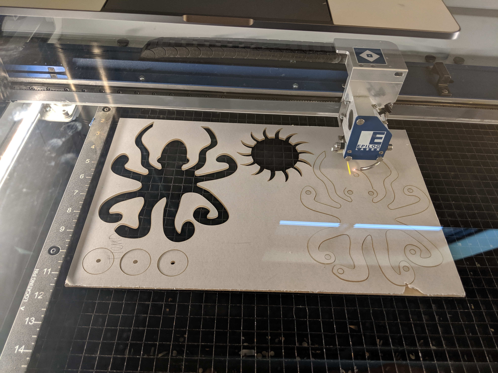
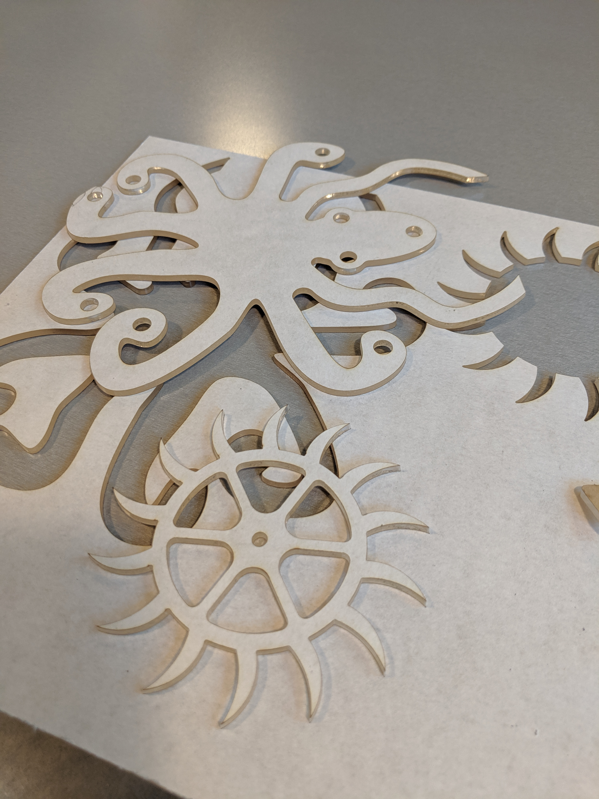

Cindy Feng's Final Project
Design
Starting point for inspiration: https://www.instructables.com/id/3D-Printed-Clock-Escapement/
As a recap of my project proposal, I took the above instructables for a 3D printed clock escapement mechanism, found the source link from UC San Diego for how to build a clock project, and sketched out what I wanted my project to look like.

CAD Design
I followed the instructions for how to draw the escapement wheel and pendulum here: http://mae3.eng.ucsd.edu/clock-project/drawing-th. I used Onshape to draw these shapes, and then I extracted the faces as .dxfs for cutting.


For the pendulum, I decided to freehand splice an octopus, while maintaining the top geometry of the pendulum. I used the provided sketch to add my own creative flair to the pendulum.


Materials
Procuring materials was a journey! In my proposal, I planned to buy 0.25" acrylic from the MILL, but I found out they didn't have this thickness. I bought what was available--0.25" thick wood from the MILL, which was super smokey after it was lasercut. Since I did not like the finish of the wood (I needed a very smooth finish to minimize friction between moving parts), I still wanted to lasercut the pieces out of 0.25" acrylic, and use the wood pieces as backup.

I also ran to TAP Plastics store to buy what I thought was 0.25" acrylic, which ended up being 0.25" polycarbonate, so I found out I could not lasercut this material. I ended up switching to 0.125" acrylic because that is what was available, but it ended up being too light, and causing problems later on.
Following the specifications for the Epilog lasercutter for 0.125" acrylic, I used 2% speed, 100% power, and 100 freq. I undersized the holes in the CAD model because I wanted to be able to drill them based on the sizes of dowels and tubing that I would find at the hardware store.


I also needed a weight to spin my escape wheel. In order to use another fabrication method, I wanted to cast a fridge magnet that I had. However, the process did not go according to plan.


Because of the magnet on the back that I could not pop off, I opted to dip the magnet into silicon and suspend it with another magnet.


The mold had too many air bubbles so it was not a good mold of the original magnet. I also feared the plaster would be too light. So I opted to take the only block of machineable wax that I had from a previous assignment that had climbing holds, and mill out the climbing holds to make a solid silicone block that would serve as a weight for the system.


When making the mold, I suspended a keychain into the silicon so I would have a hook to attach thread to wind up the system.

I also lasercut an upright out of scrap 0.25" wood that I found at the MILL. My starting point was the upright .dxf file that was on the instructables, but I widened it to match my drawing:
Fabrication
I had to put the upright onto a stand, so I got a scrap piece of wood and some L brackets and fasteners, and used a powerdrill to put it together.

The screws stuck out of the base! So I used a hacksaw in the Mill to cut off the extra thread.

I went to my local hardware store and bought a clevis pin and a collar with a set screw. I also picked up thread and a plastic flange bearing. I hammered the flange bearing into the holding fixture.

I also bought a steel rod and hammered it into the acrylic escapement wheel, which cracked.

Final Assembly
Assembling the entire system was also a pain. Spoiler alert: it did not work.
The two moving parts in the system--the escapement wheel and the pendulum--had to be highly constrained so that only rotational motion was possible. Since the 0.125" acrylic was so thin, the pendulum kept rocking back and forth and the system would work for 2 swings and then the wheels would slip out of contact.
Luckily I lasercut a lot of wooden and acrylic spacers. However, when I drilled the acrylic spacers to widen the hole, they kept cracking, to the point where I only had wooden spacers left. I superglued the spacers to the backs of the octopus pendulum and the wheel, and in the process... I superglued the escapement wheel to the axis 5 minutes before the final presentation in class.
There are so many ways I would improve this system.. but I ended up with a cool build that just needed some final tweaking!


Bill of Materials
- 0.25", 12" x 24" wood purchased from the MILL $4.00
- 8 3/16" diameter nuts and bolts, 1 3/16" diameter clevis pin, 1 set screw and collarfor 3/16" tube, and 1 1" dowel purchased from a hardware store $10.00
- loose thread from home
- small keychain from home
- machineable wax
- Oomoo 2-part silicon and plaster
- 4 pack of L brackets and screws purchased from a hardware store $3.50
- Superglue that is ok to use with plastics $1.50
Files Used
- Onshape CAD design
- Escapement wheel dxf
- Octopus pendulum dxf
- upright dxf for support
- Fusion 360 model f3d for milling machineable wax
- Bantam file for milling machineable wax
- gcode toolpath for milling machineable wax
Methods Used
- CAD (Onshape)
- Lasercutting
- Stock parts (nuts, bolts, clevis pin, L brackets, flange bushings, set screw and collar)
- CNC milling, molding and casting
Reflection and Future Considerations
In the future, first and foremost I would definitely stick to using 0.25" acrylic, my original plan for all of the lasercut pieces. I didn't have easy access to 0.25" acrylic so I ended up using 0.25" wood, which didn't have a smooth finish after lasercutting, and 0.125" acrylic for the pendulum, which was too thin and was hard to set straight with the dowel without many spacers. I would also use metal bushings that only allow rotational motion.